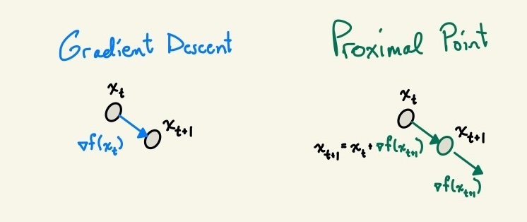
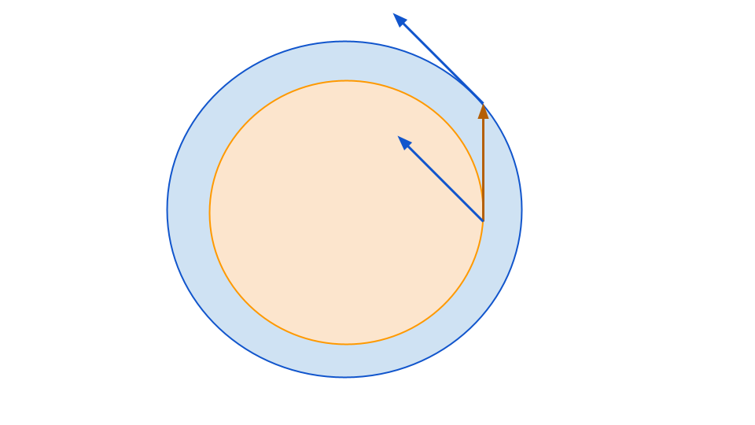
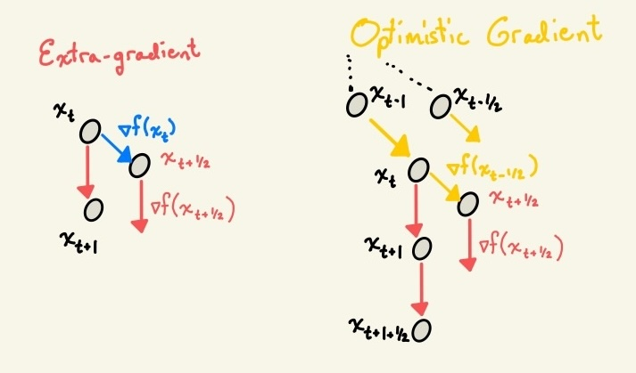
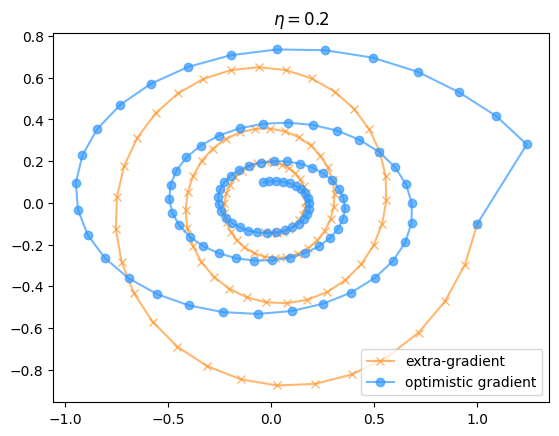
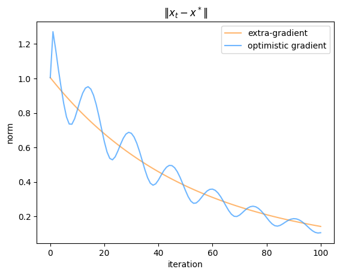
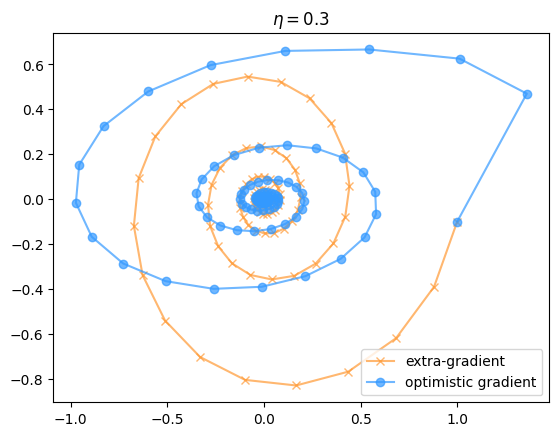
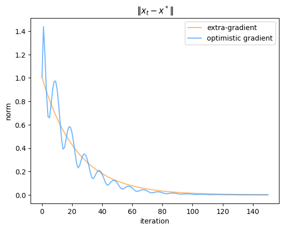

Extra gradients
In the RL Renaissance, PPO is now on the tip of everyone’s tongue. But the roots of the first letter in the now-widespread acronym actually derive from a much more ancient and obscure branch of optimization. In fact, PPO bears little resemblance
Recall your standard gradient descent update:
\[ x_{t+1} = x_t - \eta \nabla f(x_t) \]
Gradient descent is simple, intuitive, and usually effective. It also has major convergence issues. These are also intuitive, and come from the fact that the naive gradient descent algorithm applies a one-size-fits-all philosophy to step size across different dimensions of the iterate. If the learning problem is ill-conditioned, (i.e. the sharpest direction is many orders of magnitude steeper than the flattest, so \(\kappa = \frac{\lambda_{\max}(\mathcal{H})}{\lambda_{\min}(\mathcal{H})})\) is large), then you have to keep the learning rate small to avoid divergence, which means learning in the flat directions, where a larger step size would be optimal, will occur slowly. There’s a whole centuries-old field of (approximate) second-order optimization dedicated to fixing this problem, which essentially amounts to multiplying your gradient by some matrix so that you take larger steps along the flat directions and smaller steps on the steep ones.
\[ x_{t+1} = x_t - \eta P(x_t) \nabla f(x_t) \]
When \(P\) is \(\mathcal{H}^{-1}\), you have Newton’s method. But there’s another class of iterative algorithm known as proximal methods which take this one step further. A proximal method performs the implicit update
\[x_{t+1} = \mathrm{arg min } \;f(x) + \frac{\lambda}{2} \| x - x_{t} \|^2\]
which when I first saw it looked a bit suspicious, because if you set \(\lambda = 0\) you’ve just restated your original problem of finding the minimum of \(f(x)\), and if you could have done that easily in one step you wouldn’t have needed an optimization algorithm in the first case.
In some cases, setting the \(\lambda > 0\) term can actually make the problem a bit easier. If \(f\) is convex, for example, then \(f + \frac{\lambda}{2} \| x - x_t\|^2\) will be \(\lambda\)-strongly convex, which means that the larger \(\lambda\) is the faster you can find an answer to the implicit definition given above.
Note as well that the proximal update has another closed form, which is obtained by setting \(\nabla [ f(x) +\frac{\lambda}{2} \| x - x_{t} \|^2 ] = 0\):
\[x_{t+1} = x_t - \frac{1}{\lambda} \nabla f(x_{t+1}) \]
This is actually solvable in closed form if you have a way of inverting your jacobian. Even if you can’t solve it in closed form, there are a number of options available to you for approximating this update. These will be the extra- and optimistic-gradient methods alluded to in the title of this post. But before I get into how this thing is approximated, I want to take a moment to appreciate why we would want to update based on the next iterate’s direction of steepest descent. After all, in a changing, nonlinear optimization landscape, is it really reasonable to expect that the direction of steepest descent at some other point in space will be a good descent direction at your current iterate?
The answer is yes, and the reason comes back to preconditioning. Recall the gradient-based version of the proximal update, but now written in a slightly more explicit format, setting \(\eta = \frac{1}{\lambda}\) from before.
\(\begin{align} x_{t+1}& = x_t - \eta F (x_{t+1}) \\ x_{t+1} + \eta F(x_{t+1}) &= x_t \\ (I + \eta F)x_{t+1} &= x_t \\ x_{t+1} &= (I + \eta F)^{-1} x_t \end{align}\)
A popular example function in situations like this is the quadratic \(f(x) = x^\top Ax\) for some symmetric positive definite matrix \(A\). In this case, we can write out our update dynamics explicitly as \((I + \eta F)^{-1} = (I + \eta A)^{-1}\). Analogously, we can write our gradient descent update as the application of the fixed matrix \((I- \eta A)\). If you took enough math courses in high school and college, you might recall that \(\frac{1}{1 + x}\) is a decent approximation to \(1 - x\) for small \(x\). You might also recall that \(\frac{1}{1 + \alpha x} = \sum_{t=1}^\infty (-\alpha x)^t\) – this interpretation will also come in handy later in the post.
Since \(A\) is nice, it is diagonalizable with real eigenvalues and so we know that the spectrum of our new operator \((I - \eta A)^{-1}\) will be the straightforward transform \(\lambda_i(A) \mapsto \frac{1}{1 + \eta \lambda_i}\). The function \(\frac{1}{1 + \eta x}\) has the effect of squashing the eigenvalues of \(A\) together, so that the operator will be a contraction for arbitrarily large step sizes \(\eta\) (as opposed to the operator \(I - \eta A\), which can only take values \(\eta < 2\lambda_{\max}(A))\) before it becomes an expansion).

For example, if \(A = \mathrm{diag}(0.01, 1000)\) (with a nice round condition number of 1 million), the largest stable learning rate we can use will be 0.001. Then the resulting eigenvalues of the operator \(I - \eta A\) will be roughly \(1 - 1e-6, 0\). Power iteration on this operator (which is what gradient descent essentially is in this problem setting), will thus converge extremely slowly due to the ~unity eigenvalue. By contrast, the operator \((I + \eta A)^{-1}\) can use a much larger value of \(\eta\) has eigenvalues of approximately $ , (1, e^{-1000})$. Note, this isn’t as good as Newton’s method, which would rescale the eigenvalues to all be equal, but it does a pretty good job.
For the quadratic \(f(x) = x^\top A x\), newton’s method applies the update \(x_1 = x_0 - A^{-1} Ax_0 = 0\) which exactly solves the optimization problem in a single step. The proximal method doesn’t converge in a single step, but also doesn’t necessarily require inverting the whole \(A\) matrix.
So given that the proximal update seems pretty hard to compute and also doesn’t converge as fast as Newton’s method, why would anyone care about it? First, because there are some cases where a proximal update might still be easier to compute than newton’s method, making it converge faster in wall-clock time if not in iterates. And second, because there are many optimization problems that don’t involve finding a local minimum of a stationary objective – in particular, in games.
While not as trendy as it used to be, the study of saddle-point-finding algorithms did make a splash in the machine learning conference circuit in the late-20-teens, back when GANs were the state of the art. Games present a lot of problems that “normal” optimization problems don’t; namely, if you have two players following best-response dynamics, you can end up in eternal cycles (for example, if you play rock paper scissors with a friend and you both follow the strategy of picking the thing that would have always beaten your opponent’s previous selection).
These cycles can happen even for continuous, trivial “games” like a variant of the quadratic discussed previously: \(\max_x \min_y x^\top A y\), with \(A\) as always SPD (in fact, we can make it even simpler and say \(A\) is the identity). In this case, you get dynamics like the ones below, where \(x\) and \(y\) follow a perpetual elipse rather than converging to a fixed-, ideally saddle-point.
In physics-speak, we need some sort of damping factor so that the trajectory spirals inward rather than cycling. It turns out, somewhat surprisingly, that various ways of approximating the proximal update rule are supremely effective at adding just such a damping factor. In the case where your dynamics follow a circle, this is easy to see in a proof by picture. Whichever direction you step along the circle, the gradient at that point will be pushing you slightly towards the origin if applied at your current position.

The linear-algebraic justification behind this is that in a game, you have a dynamical system of the form
\[(x_{t+1}, y_{t+1}) = F(x_t, y_t)\]
where, for example, simultaneous gradient ascent on \(x\) and descent on \(y\) in the game \(\max_x \min_y x^\top A y\) for \(x, y \in \mathbb{R}^n\) will have the form
\[F(x_t, y_t) = A y_t, -A^\top x_t = M (x_t \oplus y_t) \quad M \in \mathbb{R}^{n \times n} \]
where we can write \(M\) as
\[\begin{bmatrix} 0 & A \\ -A^\top & 0 \end{bmatrix}\]The problem with this setup is that even if \(A\) is a nice friendly SPD matrix, \(M\) won’t be. \(M\) is skew-symmetric, which means its eigenvalues are all either purely imaginary or zero. This means that our gradient update, which has the form \((I- \eta M)(x_t \oplus y_t)\). The eigenvalues of \(I - \eta M\) will look like $ _k = 1 - _k i$ where \(\sigma_k\) can be any real number, and it’s easy to see that \(|1 - \eta \sigma_k i| \geq 1 \forall \sigma_k\). So our gradient descent operator is a non-contraction.
By contrast, the update \((I + \eta M)^{-1}\), which is what the proximal update applies, will have eigenvalues of the form \(\frac{1}{1 + \eta \sigma_k i}\). By the same argument as we noted previously, since \(| 1 + \eta \sigma_k i| \geq 1\), its reciprocal will be inside of the unit circle for any nonzero \(\sigma_k\). As a result, while the system \(I - \eta M\) will never converge for any \(\eta\), \((I + \eta M)^{-1}\) will converge for essentially all \(\eta\) (at least, it will converge along the dimensions that count towards the objective).

Extra, extra! For the small population of basketball players who read obscure blog posts on saddle point optimization, the extra-gradient method can be roughly interpreted as a fake-step. You pretend to take a gradient step, then look at how the loss landscape has changed in response, then take your real step based on your updated information.
\[x_{t+\frac{1}{2}} = x_t - \eta \nabla f(x_t) \] \[x_{t+1} = x_t - \eta \nabla f(x_{t + \frac{1}{2}})\]
There are a couple of ways of interpreting this update rule. One is to view it as one step further down a continuum between gradient and proximal updates (this only holds exactly when the gradient function is linear, otherwise you have to mumble `first order Taylor approximation’ whenever anyone sees you do it):
\[x_{t+1} = x_t - \eta \nabla f(x_t - \eta \nabla f(x_t)) = x_t - \eta J (x_t - \eta J x_t) = x_t - \eta Jx_t + \eta^2 J^2 x_t = \sum_{t=0}^2 (-\eta \nabla f)^t x_t\]
But is this really enough to guarantee convergence? Let’s revisit the skew-symmetric update of the \(\min_x \max_y x^\top A y\) game. In this case, we have a linear dynamical system with dynamics
\[x_{t+1} = x_t - \eta A x_t + \eta^2 A^2 x_t \quad x_{t+1} = y_t - \eta A^\top y_t + \eta^2 (A^2)^\top y_t \]
or in other words, we have the update \((I - \eta M + \eta^2M^2)\). This update has eigenvalues \((1 - \eta \sigma_k i - \eta^2\sigma_k^2)\), for which we have
\(|(1 - \eta \sigma_k i - \eta^2\sigma_k^2)| = \sqrt{1 - 2\eta^2 \sigma_k^2 + \eta^4 \sigma_k^4 + \eta^2\sigma_k^2} = \sqrt{1 - \eta^2 \sigma_k^2 + \eta^4 \sigma_k^4}\)
which might be less than 1, depending on whether you can find an \(\eta\) so that \(\eta^2 \sigma_k^2 > \eta^4 \sigma_k^4\).
So there’s hope. And intuitively, this makes some sense. You know that if you’re moving in a circle, your velocity at time \(t\), \(\dot{x}_t\), will be orthogonal to your position \(x_t\) (or rather, it will be orthogonal to your distance from the axis of rotation, but for simplicity we’ll assume rotation about the origin). The velocity at a point \(y_t\) a little bit ahead of you will be orthogonal to it, but from your position would look like it was pointing slightly towards the axis of rotation (this is just the geometric manifestation of the fact that \(i^2\) is a negative number).
Optimism
So we have a hope of convergence, but we’ve paid for it with a somewhat wasteful extra gradient computation. Gradients are much cheaper than Hessians (which are much cheaper than matrix inversion), but even a linear operation on a googol of parameters will still be a lot of compute. What is the lazy machine learning engineer to do? Well, iterate \(x_t\) is fairly close to iterate \(x_{t - \frac{1}{2}}\), so it’s not crazy to think that the gradient that’s already lying around from \(x_{t - \frac{1}{2}}\) might be a pretty good approximation of the one at \(x_t\) – perhaps good enough that you can reuse it without anyone noticing. In other words: by being optimistic about the ability of the previous gradient to approximate the current one, we can reduce the computational cost associated with the learning algorithm.
\[x_{t+\frac{1}{2}} = x_t - \eta \nabla f(x_{t - \frac{1}{2}}) \] \[x_{t+1} = x_t - \eta \nabla f(x_{t + \frac{1}{2}})\]
There are a couple of different ways of interpreting this update rule. The one that I like, and which is close to how optax implements OGD, is to imagine a two-steps-forward, one-step-back trajectory. You take a big jump of an update, compute your next update direction at your current position, then take a step back before you jump in the new direction.
\[x_{t+1} = x_t - 2\eta \nabla f(x_t) + \eta \nabla f(x_{t-1}) \]
The \(\eta \nabla f(x_{t-1})\) quantity is also sometimes referred to as a negative momentum term for obvious reason. This presents a nice distinction with gradient descent on minimization problems, where positive momentum is generally preferred (you might be wondering if, analogously to minimization problems, doing Polyak averaging with a negative sign would be better than this single-step negative momentum, but someone already asked this question and the answer is no).
Now, let’s revisit the bilinear game described previously, noting that the following discussion does not apply to general minimax problems on arbitrary nonlinear objectives and depends heavily on the structure of the bilinear game. Going back to our linear dynamical system interpretation of the optimization algorithm, the integer-timestep formulation decomposes as
\[x_{t+1} = x_t - 2 \eta M x_t + \eta M_{x_{t}} + \eta M x_{t-1}\]
Since our \(M\) matrix is the same as before. In fact, although it takes a little bit more work to prove, update has the same convergence rate and the same region of stability as the extra-gradient approach. To do so, we define the linear operator \(L\) such that \(x_{t+1} = L x_t\). We don’t have to construct it explicitly – all we need to do is show that its eigenvalues are within the same range as the extra-gradient ones. It helps to consider the behaviour of the sequence when initialized to \(x_0 = v\) with \(v\) an eigenvector of \(M\) with eigenvalue \(\lambda\), noting that if \(x_0 = \alpha_1 v\), \(x_1 = \alpha_2 v\), then the operator \(L\) will be restricted to the one-dimensional subspace \(v\) in perpetuity.
\(\begin{align*} x_{k+1} &= (I - 2 \eta M) x_k + \eta M(x_{k-1})\\ \mu^{k+1} v &= (I - 2 \eta M) \mu^{k} v + \eta M(\mu^{k-1}v) \text{ where $\mu$ is the eigenvalue associated with $v$ in the meta-operator $L$.} \\ \mu^2 v &= (I - 2 \eta M) \mu v + \eta M v \quad \text{and noting that $(I - 2 \eta M) x_k + \eta M(x_{k-1}) = (1 - 2 \eta \lambda) v + \eta \lambda v$...}\\ \implies \mu^2 &= (1 - 2 \eta \lambda) + \eta \lambda \\ \mu &= \frac{1 - 2 i \eta \sigma \pm \sqrt{1 - 4 \eta^2\sigma^2}}{2} \\ \end{align*}\)
When I was trying to find a nicer factorization of the above, ChatGPT claimed that this can be shown to be equivalent to the extra-gradient operator eigenvalues, but I eventually convinced it that the \(\approx\) symbol isn’t an equality and it rightly recanted that claim. Since this term also shows up in theorem 2.4 of this paper, I think that’s about as good as you can get. However, it is worth noting that this will still be a contraction for suitable step sizes and so we get exponential convergence just like with extra-gradients.
In practice, the difference between optimistic and extra- gradient descent/ascent is pretty minimal. Empirically prior work seems to lean slightly towards favouring optimistic gradient descent for bilinear games and other problems whose structure means that the gradient reuse is a good approximation. I’ve included a couple of examples from the bilinear game discussed previously to give a flavour for how the convergence works.




So as you can see, although the convergence rates of the two methods look pretty similar, at any particular time their iterates can be extremely far apart (because the two algorithms head in opposite directions starting from the first step). Also, the optimistic algorithm has a slightly less-than-uniform convergence behaviour compared to the extra-gradient one, even though they average out to similar values. As you might have expected, having a large learning rate results in faster convergence not only because you move faster in each loop of the spiral, but also because there’s a stronger regularization towards the center, so you need fewer loops to reach the same distance from the origin.
Games are a bit out of fashion now that GANs have officially lost the image generation war to diffusion models, but I think this is a terrible shame because there are lots of challenging non-stationary learning problems where these types of non-convergence issues also come up. I originally heard the phrase “optimism” in the online learning context (mirror descent merits its own blog post, although many good ones already exist so I might not write about it myself), and there are lots of multi-agent systems that would likely be vulnerable to similar cyclic dynamics if one isn’t careful. I’ve even seen an Extragradient PO algorithm, so the future of proximal methods may yet have cause for (and I apologize for the terrible pun) optimism.